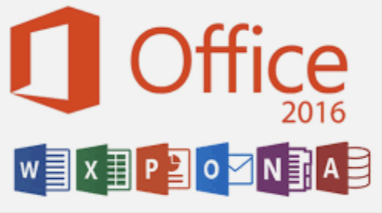
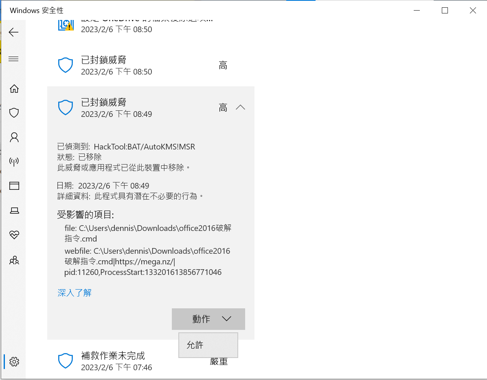
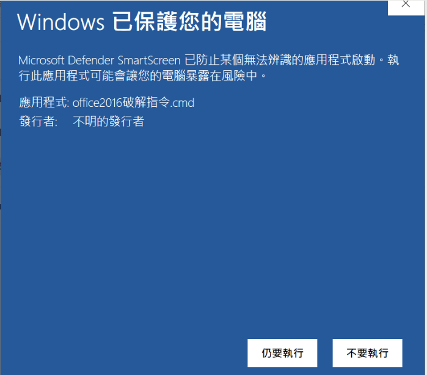
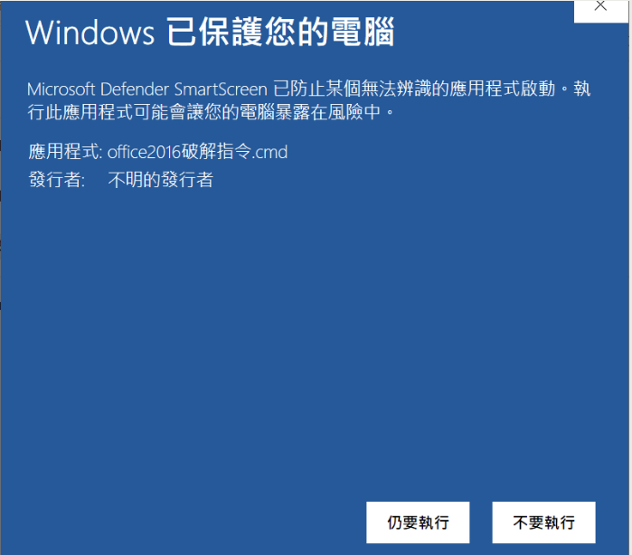
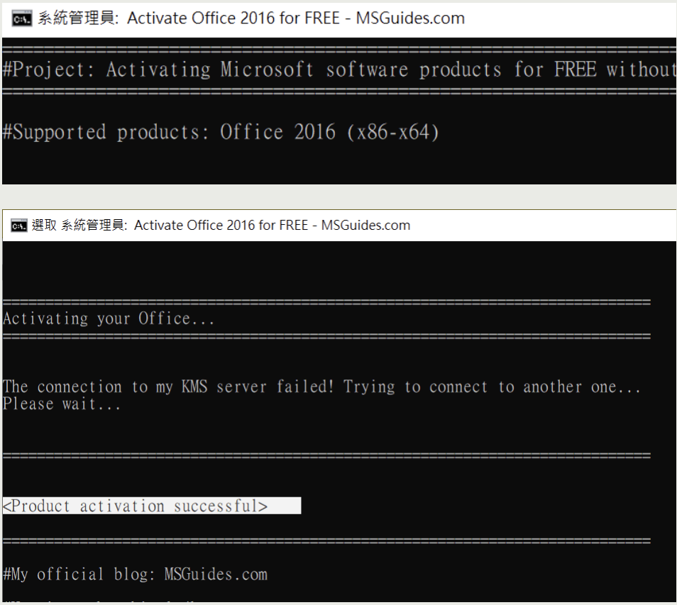

想辦法讓office跳過填寫序號的授權頁面
 安裝之前，請先去設定中的應用程式將電腦原有的 Office解除安裝， 如：office365 , office2016/2019。 這是Mega雲端硬碟， 這一次需要用到的東西都在這裡，請先前往下載。 該連結內包含兩個office 2016的安裝檔案，其中有一個是"zh"結尾的，那是繁體中文的版本；另一個則是英文版，下載來就可以直接點擊.exe進行安裝了。
該連結內包含一個破解指令，下載時可能會被瀏覽器警告， 選擇保留該檔案。保留該檔案後可能會被Windows defender 警告， 接著再去windows defender 找到這個威脅的下拉選單選取"允許在設備上運行"。  關閉剛剛下載的office所有軟體，確保已經連接網際網路。
 
將這個副檔名為cmd的檔案按一次左鍵再按一次右鍵，點選"以系統管理員身分執行"，
當"Windows 以保護您的電腦"出現時，點選詳細資訊，之後選擇仍要執行。

將這個副檔名為cmd的檔案按一次左鍵再按一次右鍵，點選"以系統管理員身分執行"，
當"Windows 以保護您的電腦"出現時，點選詳細資訊，之後選擇仍要執行。
 接下來請等待直到你 看到了 "Product activation successful" 的時候表示你已經可以使用office 2016了， 之後就可以關掉終端機了。 如果是失敗的話就看看是不是沒有卸掉電腦原本安裝的office， 之後整個流程再試一次。 請注意，這個方法只是幫你跳過授權的頁面，並不是幫你電腦上面的office授權， 因此請在使用時務必小心：office可能會顯示“為何要冒這個風險使用盜版office”， 在將電腦畫面投射到大螢幕之前，要確保“為何要冒這個風險使用盜版office”已經被關掉了。